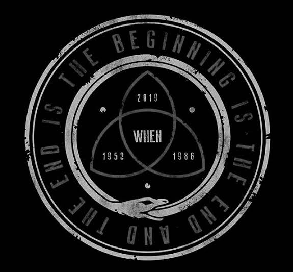

Hidden Eye

In moments of frustration, it's easy to lose sight of the bigger picture.
Stay calm, take a deep breath, and refocus your energy on the task at hand.
Clear your mind of doubt and distraction, channeling your focus into finding the solution that lies just beyond the dead end.